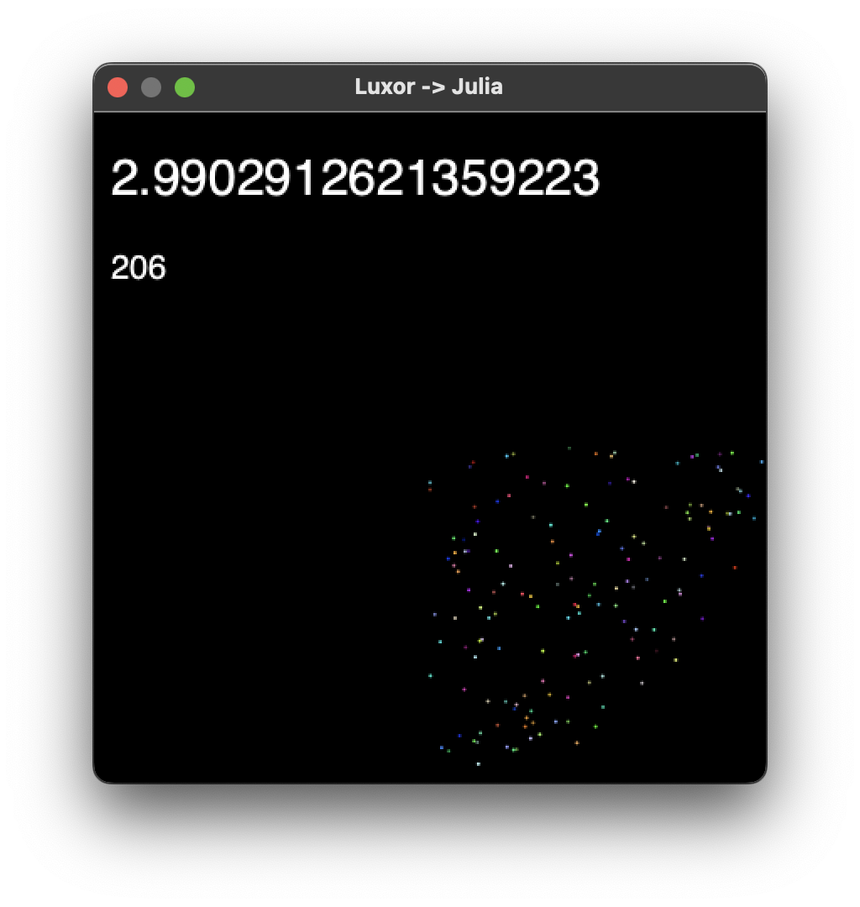
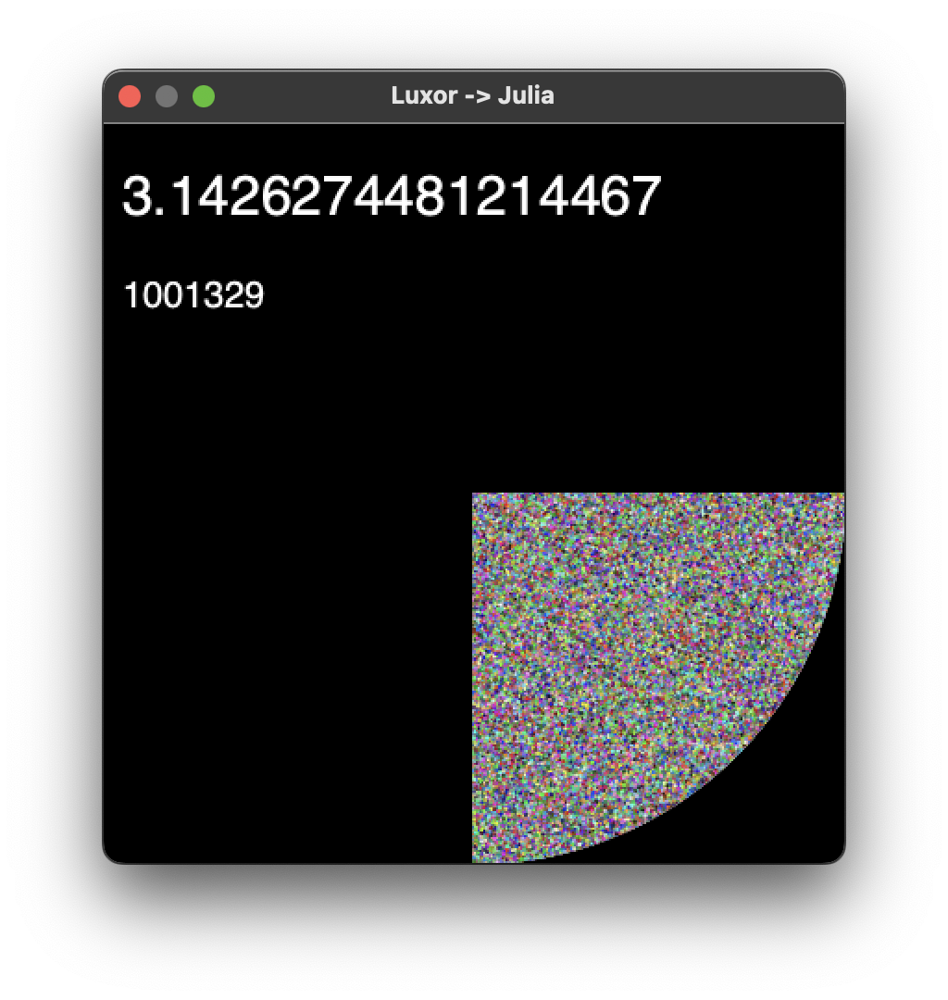

Make simple animations
Luxor.jl can help you build simple animations, by assembling a series of PNG images into an animated movie.
1: A Julia spinner
The first thing to do is to create a Movie object. This acts as a useful way to pass information from function to function.
using Luxormymovie = Movie(400, 400, "mymovie")The resulting animation will be 400 × 400 pixels.
To make the graphics, define a function called frame() (it doesn't have to be called that, but it's a good name) which accepts two arguments, a Scene object, and a framenumber (which will be an integer).
A movie consists of one or more scenes. A scene determines how many Luxor drawings should be made into a sequence and what function should be used to make them. The framenumber lets you keep track of where you are in a scene.
Here's a simple frame function which creates a drawing.
function frame(scene::Scene, framenumber::Int64) background("white") norm_framenumber = rescale(framenumber, scene.framerange.start, scene.framerange.stop, 0, 1) rotate(norm_framenumber * 2π) juliacircles(100)endThis function is responsible for drawing all the graphics for a single frame. The incoming frame number is converted (normalized) to lie between 0 and 1 - ie. between the first frame and the last frame of the scene. It's multiplied by 2π and used as input to rotate. So, as the framenumber goes from 1 to the last frame in the scene, each drawing will be rotated by an increasing angle from 0 to 2π. For example, for a scene with 60 frames, framenumber 30 will set a rotation value of about 2π * 0.5.
The Scene object has details about the number of frames for this scene, including the number of times the frame function is called.
To actually build the animation, the animate function takes a movie and an array of one or more scenes and creates all the drawings required. It can also build a GIF or movie file.
animate(mymovie, [ Scene(mymovie, frame, 1:60) ], creategif=true, pathname="juliaspinner.gif")Obviously, if you increase the range from 1:60 to, say, 1:300, you'll generate 300 drawings rather than 60, and the rotation will take longer and will be much smoother. Of course, you could change the framerate to be something other than the default 30.
Use createmovie = true instead of creategif = true if you want to make a video file. Specify the location and format for the video file in pathname:
... createmovie = true, pathname = "/tmp/juliaspinner.mkv"...2: Combining scenes
In the next example, we'll construct an animation that uses different scenes.
Consider this animation, showing the sun’s position for each hour of a 24 hour day. (It’s only a model...)
Again, start by creating a movie, a useful handle that we can pass from function to function. We'll specify 24 frames for the entire animation.
sun24demo = Movie(400, 400, "sun24", 0:23)We'll define a simple backgroundfunction function that draws a background that will be used for all frames (since animated GIFs like constant backgrounds):
function backgroundfunction(scene::Scene, framenumber) background("black")endA nightskyfunction draws the night sky, covering the entire drawing:
function nightskyfunction(scene::Scene, framenumber) sethue("midnightblue") box(O, 400, 400, action = :fill)endA dayskyfunction draws the daytime sky:
function dayskyfunction(scene::Scene, framenumber) sethue("skyblue") box(O, 400, 400, action = :fill)endThe sunfunction draws a sun at 24 positions during the day. Since the framenumber will be a number between 0 and 23, this can be easily converted to lie between 0 and 2π.
function sunfunction(scene::Scene, framenumber) t = rescale(framenumber, 0, 23, 2pi, 0) gsave() sethue("yellow") circle(polar(150, t), 20, action = :fill) grestore()endAnd finally, tere's a groundfunction that draws the ground, the lower half of the drawing:
function groundfunction(scene::Scene, framenumber) gsave() sethue("brown") box(Point(O.x, O.y + 100), 400, 200, action = :fill) grestore() sethue("white")endTo combine these together, we'll define a group of Scenes that make up the movie. The scenes specify which functions are to be used, and for which frames:
backdrop = Scene(sun24demo, backgroundfunction, 0:23) # every framenightsky = Scene(sun24demo, nightskyfunction, 0:6) # midnight to 06:00nightsky1 = Scene(sun24demo, nightskyfunction, 17:23) # 17:00 to 23:00daysky = Scene(sun24demo, dayskyfunction, 5:19) # 05:00 to 19:00sun = Scene(sun24demo, sunfunction, 6:18) # 06:00 to 18:00ground = Scene(sun24demo, groundfunction, 0:23) # every frameFinally, the animate function scans all the scenes in the scenelist for the movie, and calls the specified functions for each frame to build the animation:
animate(sun24demo, [ backdrop, nightsky, nightsky1, daysky, sun, ground ], framerate=5, creategif=true)Notice that, for some frames, such as frame 0, 1, or 23, three of the functions are called: for others, such as 7 and 8, four or more functions are called.
An alternative
As this is a very simple example, there is of course an easier way to make this particular animation.
We can use the incoming framenumber, rescaled, as the master parameter that determines the position and appearance of all the graphics.
function frame(scene, framenumber) background("black") n = rescale(framenumber, scene.framerange.start, scene.framerange.stop, 0, 1) n2π = rescale(n, 0, 1, 0, 2π) sethue(n, 0.5, 0.5) box(BoundingBox(), action = :fill) if 0.25 < n < 0.75 sethue("yellow") circle(polar(150, n2π + π/2), 20, action = :fill) end if n < 0.25 || n > 0.75 sethue("white") circle(polar(150, n2π + π/2), 20, action = :fill) endendLive graphics
Although Luxor is designed primarily for creating static graphics, it's possible to run it with an external buffer to display moving graphics. This example finds an approximation to π, updating the window continually with the latest estimate:
using Luxorusing MiniFBinclude(dirname(pathof(Luxor)) * "/play.jl")function run() within_circle = 0 total_points = 0 @play 400 400 begin pt = Point(rand(), rand()) total_points += 1 d = distance(O, pt) if d <= 1 randomhue() circle(200pt, 1, :fill) within_circle += 1 end pi_estimate = 4.0within_circle / total_points # show estimate sethue("black") box(boxtopleft(), boxmiddleright(), :fill) sethue("white") fontsize(30) text(string(pi_estimate), boxtopleft() + (10, 50), halign=:left) fontsize(20) text(string(total_points), boxtopleft() + (10, 100), halign=:left) sleep(0.05) endendrun()

For more information, see Interactive graphics and Threads.